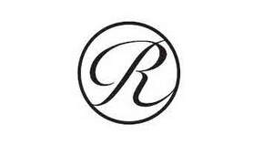

Trade Mark Journal No.2025/040 3 October 2025
UK00004268639 24 September 2025 (3,8,10,11,21,25)

International priority date claimed: 27 March 2025
(Japan)
(2025-032463)
- Class 3
- Soaps and detergents; dentifrices; cosmetics; perfumes; perfumery; incense; body soaps; shampoos; hair treatment preparations; cosmetic preparations for hair care; hair styling preparations; hair oils.
- Class 8
- Hair styling irons; crimping irons; hand implements for hair curling, electric; electric hair straightening irons; eyelash curlers; nail clippers; razors, non-electric; tweezers; scissors; hair cutting scissors; cutlery; edge tools [hand tools]; edged weapons; swords; electric razors and electric hair clippers; diving knives; palette knives; depilation appliances for household use; depilation appliances for industrial use; depilation appliances, electric and non-electric; electric hair trimmers; hand tools, hand operated; tableware [knives, forks and spoons]; cheese slicers, non-electric; pizza cutters, non-electric.
- Class 10
- Medical apparatus and instruments; medical supports for the body; back supports for medical use; wrist supports for medical use; medical hosiery; pillows for medical use; belts for medical purposes; medical apparatus and instruments for recovery of mobility function; sanitary masks; sanitary masks for medical purposes; clothing for medical purposes, namely far-infrared clothing for promoting blood circulation for household use; patient examination gowns; clothing especially for operating rooms; medical apparatus and instruments for hair removal; medical lasers for hair removal; facial aesthetic treatment equipment using ultrasonic waves for commercial use; esthetic massage apparatus for commercial use; facial aesthetic treatment equipment using ultrasonic waves for household purposes.
- Class 11
- Prefabricated bath installations sold as a unit; bath fittings; shower heads; shower heads with water purifiers; spray heads for showers; water-saving shower heads; showers; shower fittings; microbubble generators for baths; household tap-water filters; water purifying apparatus for industrial purposes; microbubble generators for baths for industrial purposes; shampoo basins; scalp washing showers for industrial purposes; tap water faucets; pipe line cocks; washers for water taps; household electrothermic appliances; towel steamers for hairdressing purposes; hair drying machines for beauty salon use; hair steamers for beauty salon use; shampoo basins for barbers' shop use; hair dryers for use in beauty salons; hair dryers; hair dryers for curling; full-body drying apparatus; laundry dryers, electric, for industrial purposes; facial steamers; electric lamps and lighting apparatus; bread-making machines; coffee roasters; coffee machines, electric.
- Class 21
- Cosmetic utensils, other than electric toothbrushes; toothbrushes, electric; dental floss [floss for dental purposes]; scalp scratchers; brushes; hair brushes; brushes for pets; body brushes; foldable hairbrushes; clothes brushes; combs; comb cases; combs for animals; cases for hair brushes; industrial packaging containers of glass or porcelain; dinnerware, other than knives, forks and spoons; vacuum bottles [insulated flasks]; drinking flasks for travellers; household or kitchen utensils and containers; cookware and tableware, except forks, knives and spoons; insulating sleeve holder for beverage cups; feeding vessels for pets; perfume burners; flower vases; candle extinguishers; candle holders.
- Class 25
- Clothing; underclothing; underwear; girdles; pajamas; waistbands for clothing; belts for clothing; footwear [other than footwear for sports]; special footwear for sports; clothes for sports; sports clothing; sports shoes; clothing made with far-infrared radiation (FIR) emitting ceramic fibres; protective members for footwear.
MTG Co., Ltd.
Representative: Marks & Clerk LLP